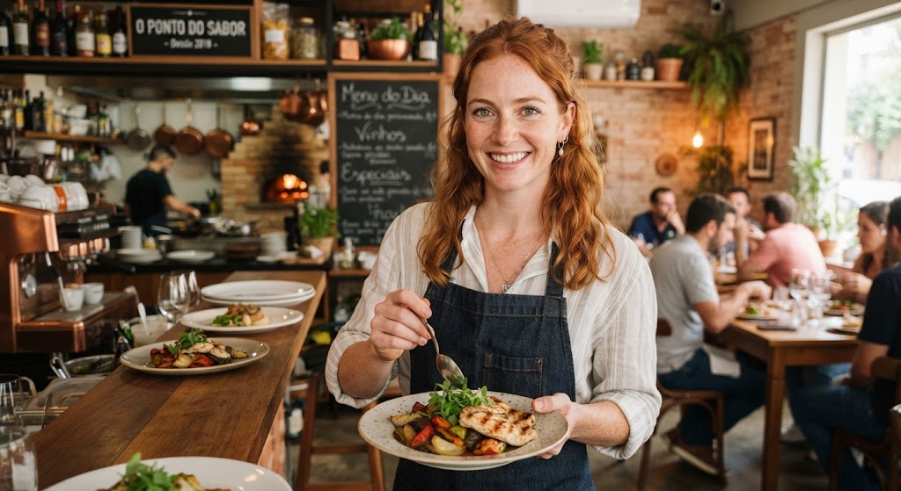
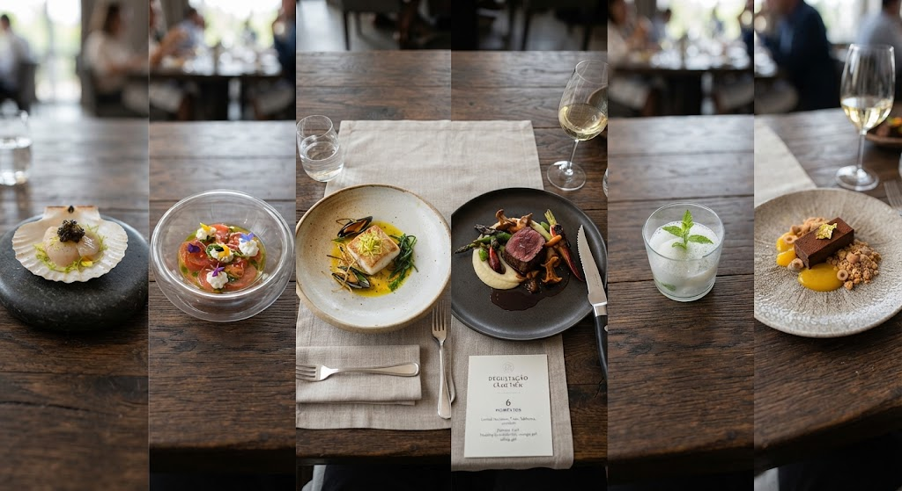

Em alta gastronomia, cada prato é pensado como uma experiência, não apenas uma refeição. O menu degustação reúne uma sequência de pratos pequenos, servidos em harmonia com drinks seletemente selecionados, onde técnica e criatividade se encontram no detalhe. Atemperatura exata de um molho, o ponto perfeito de uma proteína, o contraste entre texturas crocantes e cremosas. Ingredientes sazonais e de origem local costumam ser protagonistas, valorizando produtores da região e contando uma história através do sabor. Mais do que satisfazer a fome, o objetivo é surpreender o paladar e criar uma memória — cada garfada carrega intenção, equilíbrio e, muitas vezes, um toque de teatro na hora de servir.
